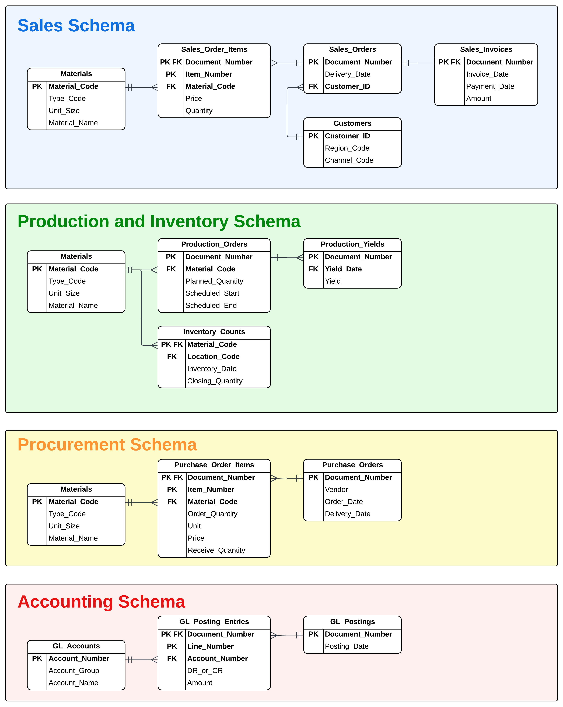

Muesli - Introduction¶
Background & Operating Processes¶
Muesli is a popular breakfast dish. Dry muesli is primarily a mixture of rolled oats and wheat flakes, with nuts and pieces of dried fruit.

Muesli Pty Ltd is a company that operates a small factory making muesli that it sells to stores that service the breakfast foods market. It makes six flavours of muesli, that come in two sizes – 500g and 1kg.
Stores that carry breakfast cereals in can be roughly classified into three types or channels, largely based on their size – corner stores (7-11 etc.), grocery stores (Woolworths, Coles, IGA etc.), and hypermarkets (Aldi, Target, Big W etc.). Separate pricing sheets are maintained for each channel.
Supply chain fulfillment times are extremely important in this market. Customers will not place orders unless next day delivery can be guaranteed. To help ensure delivery times can be met, the company engages remote warehousing services at 3 locations around the country to fulfil orders (North, South and West). These are resupplied every few days from the main factory warehouse – trucks are sent from the main factory in the early morning, with stock arriving and received into inventory by end of day. Warehouses never resupply one another, nor are items ever sent back to the factory - once at a warehouse, products remain until sold. The company does not operate on weekends.
Customers are grouped into 16 geographical regions based on shipping addresses, with each region assigned to one of the remote warehouses for order fulfillment. The West warehouse fulfils orders from regions 05, 07 and 10, whereas orders from regions 06, 08, 09 and 16 are fulfilled from the South. The remaining regions are fulfilled by the North warehouse.
The sales team prints the current list of available inventories at each of the 3 warehouse locations and uses this to inform customers wishing to place orders whether their order can be fulfilled. As each sale is made, the sales team updates the available stock figures on the printed sheet. Once everything is sold (or there are too few items remaining to fulfil the customer’s desired order quantity) no more sales can be taken. Most customers call to place orders in the morning. Sales orders are entered into the system while the customer is on call, with the system calculating pricing and order totalling which is passed on while the order is finalised and confirmed. The warehouse teams are notified of each new sale, and items are shipped out to customers by end of day.
The company has a single production line and can only manufacture one kind of muesli at a time. The company operates on a 10-day production cycle, with each cycle planned around a week before to allow suppliers sufficient time to deliver raw materials. It is roughly decided which of the 12 products will be manufactured each day. There is an efficiency gain when producing the same product for longer periods, as it takes several hours to clean, reconfigure, and stage raw materials to switch products on the company’s single production line. Production is put away into the main warehouse at the end of the day and the day’s production yield (output) is recorded in the system.
Before going home, warehouse staff count remaining inventory at each of the four locations and update the system with these figures.
The main factory and warehouse are owned by Muesli Pty Ltd, whereas the remote locations are not. These are shared facilities, and Muesli Pty Ltd pays weekly storage costs based on how much space their inventory is occupying. A fixed fee is incurred whenever trucks resupply a warehouse from the factory.
Because of these aspects of the market and logistics model, it is extremely important for the company to get its production and resupply quantities and schedule aligned to sales demand. For the first few weeks, the company focused on building up stock of sales product in the main warehouse. Currently, the inventory policy is to keep main warehouse inventory under 100K, and inventory at each of the 3 remote warehouses under 50K. It has thus far produced and sold only 6 out of the 12 possible products.
The company negotiated a business line-of-credit with a bank, with a limit of $8M. Most of this was drawn down to set up the company. Funds are available immediately to cover any cash shortfalls to meet operating expenses. Minimum periodic payments of principle are not required, however interest is charged weekly on the outstanding balance. While very flexible, the interest rate is not as competitive as longer term secured debt such as traditional business loans, but much better than corporate credit cards.
Entity Relationship Diagram¶
The company has a single system for tracking all information. The structure of the database used by this system is documented by the ERDs below.

Accounting Data¶
The company uses the following account numbers and classifications for general ledger (GL) accounting data.
| Account Group | Account Category | Account Numbers |
|---|---|---|
| Balance Sheet - Assets | Fixed Assets | 1000, 2000, 11000 |
| Accumulated Depreciation | 2010, 11010 | |
| Current Assets | 113300, 140000, 300000, 792000 | |
| Balance Sheet - Liabilities | Loans & Payables | 113101, 160000 |
| Balance Sheet - Equity | Common Stock | 70000 |
| Balance Sheet - Misc. | Clearing Accounts | 191100 |
| Income Statement – Income | Sales Revenues | 800000 |
| Income Statement – Expenses | Depreciation | 211120, 211130 |
| Manufacturing | 400000, 500000, 510000 | |
| Logistics | 472000, 478100 | |
| Financing | 476900 | |
| Sales and Administration | 477001 – 477036, 520000 | |
| Consulting | 478000 | |
| Income Statement – Misc. | Perpetual Inventory | 893010, 895000 |